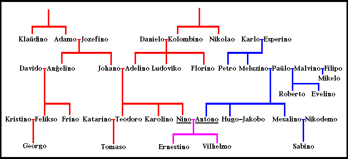

PMEG 2024
PMEG 2024
41. Parencoj kaj familianoj
La sekva prezento montras per fantazia ekzemplo, kiel oni esprimas diversajn parencajn rilatojn en Esperanto. La ekzemplo ne elĉerpas la eblojn plene. Ankoraŭ pli da vortoj estas fareblaj per diversaj afiksoj kaj afiksecaj elementoj.
La familio de Nino kaj Antono «
Supre estas pli aĝaj parencoj, malsupre pli junaj.
La strekoj montras rilatojn inter gepatroj kaj iliaj infanoj.
Ĉiuj virinaj nomoj ĉi tie finiĝas per ...ino. Ĉiuj aliaj nomoj estas viraj. La nomoj estas tiel elektitaj por klareco, sed ne ekzistas regulo, ke virinaj nomoj finiĝu per ...ino.

Antono kaj Nino estas geedzoj. Li estas ŝia edzo, kaj ŝi estas lia edzino. Ili estas geedziĝintaj. Li estas edziĝinta al ŝi, kaj ŝi estas edziniĝinta al li.
Antono kaj Nino havas du infanojn, Ernestino kaj Vilhelmo. Antono kaj Nino estas la gepatroj de tiuj ĉi infanoj. Antono estas ilia patro, kaj Nino estas ilia patrino. La infanoj nomas Antonon Paĉjo, kaj ili nomas Ninon Panjo. La karesnomoj Paĉjo kaj Panjo kaj aliaj ĉi-postaj voknomoj estas faritaj per la sufiksoj ĈJ kaj NJ. Vilhelmo estas filo de Antono kaj Nino, kaj Ernestino estas ilia filino. Vilhelmo kaj Ernestino estas iliaj gefiloj.
Antono havas fraton, Hugo, kaj fratinon, Mesalino. Antono, Hugo kaj Mesalino estas gefratoj. Antono nomas Hugon Fraĉjo, kaj li nomas Mesalinon Franjo. Nino havas fratinon, Karolino, kaj fraton, Teodoro. Ne ekzistas specialaj vortoj por montri, ĉu frato aŭ fratino estas pli aŭ malpli aĝa. Je bezono oni diru simple pli aĝa fratino, malpli aĝa frato k.s. Sed pli aĝa frato aŭ fratino eble povas nomi sian pli junan fraton aŭ fratinon frateto kaj fratineto.
Antono havas unu onklon, Petro (frato de lia patrino). Li nomas lin oĉjo Petro, aŭ simple Oĉjo. Antono estas nevo de Petro. Nino havas unu onklon kaj du onklinojn, Ludoviko (frato de ŝia patrino), Florino (fratino de ŝia patrino), kaj Anĝelino (fratino de ŝia patro). Ŝi estas ilia nevino. Ili estas ŝiaj geonkloj. Ŝi nomas la onklinojn onjo Florino kaj onjo Anĝelino, aŭ simple Onjo. Nino kaj ŝiaj gefratoj, Karolino kaj Teodoro, estas genevoj de siaj geonkloj.
Nino havas du avojn, Adamo (la patro de ŝia patro) kaj Danielo (la patro de ŝia patrino). Ŝi nomas ilin Aveto, Avĉjo aŭ simile. Nino ankaŭ havas du avinojn, Jozefino (la patrino de ŝia patro) kaj Kolombino (la patrino de ŝia patrino). Ŝi nomas ilin Avineto, Avinjo aŭ simile. Nino estas nepino de Adamo, Jozefino, Danielo kaj Kolombino, kaj ili estas ŝiaj geavoj.
Antono estas nepo de Karlo kaj Esperino (la gepatroj de lia patrino). Liaj aliaj geavoj ne estas montritaj. Antono kaj liaj gefratoj, Hugo kaj Mesalino, estas genepoj de siaj geavoj.
Ernestino kaj Vilhelmo (la infanoj de Antono kaj Nino) estas pragenepoj (pranepino kaj pranepo), de Adamo, Jozefino, Danielo, Kolombino, Karlo kaj Esperino. Adamo estas unu el la praavoj de Ernestino kaj Vilhelmo, kaj Esperino estas unu el iliaj praavinoj.
Jakobo estas edzo de Hugo. Ili edziĝis kaj daŭre loĝas en lando, en kiu samseksaj edziĝoj (kaj ankaŭ samseksaj edziniĝoj) estas oficiale rekonataj.
Antono havas bopatron, Johano (la patro de lia edzino). Li ankaŭ havas bopatrinon, Adelino (la patrino de lia edzino). Ili estas liaj bogepatroj. Li estas ilia bofilo. Nino estas bofilino de Paŭlo kaj Meluzino (la gepatroj de ŝia edzo).
Antono havas du bofratinojn, Karolino (fratino de lia edzino) kaj Katarino (edzino de frato de lia edzino). Li ankaŭ havas tri bofratojn, Teodoro (frato de lia edzino), Nikodemo (edzo de lia fratino), Jakobo (edzo de lia frato). Ne ekzistas speciala vorto por la parenceco inter Johano kaj Paŭlo, aŭ inter Meluzino kaj Adelino, kvankam iliaj infanoj estas geedziĝintaj unu al la alia.
Nino estas pranevino de Nikolao (frato de unu el ŝiaj geavoj), kaj de Klaŭdino (fratino de alia el ŝiaj geavoj). Nikolao estas praonklo de Nino, kaj Klaŭdino estas praonklino de Nino.
Nino havas du gekuzojn, Felikso kaj Frino (infanoj de ŝia onklino Anĝelino). Felikso estas ŝia kuzo, kaj Frino estas ŝia kuzino. La infanoj de Nino (Ernestino kaj Vilhelmo) estas duarangaj gekuzoj de Georgo, la filo de Felikso, ĉar iliaj gepatroj estas gekuzoj. Tomaso kaj Sabino estas bogekuzoj, ĉar lia onklino estas edzino de ŝia onklo.
Paŭlo, la patro de Antono, estas edziĝinta dufoje. Lia dua edzino, Malvino, estas duonpatrino (vicpatrino) de Antono, Hugo kaj Mesalino, la infanoj de lia unua geedziĝo. Antono estas duonfilo (vicfilo) de Malvino, kaj Mesalino estas ŝia duonfilino (vicfilino). Roberto estas duonfrato de Antono, kaj Evelino estas lia duonfratino. Ili havas nur unu el siaj gepatroj komuna. Ankaŭ Malvino estas edziniĝinta dufoje. Ŝia dua edzo, Paŭlo, estas duonpatro (vicpatro) de Mikelo, la filo de ŝia unua geedziĝo (kun Filipo). Antono estas duonfrato (vicfrato) de Mikelo, kaj Mesalino estas duonfratino (vicfratino) de Mikelo. Ili havas neniun el siaj gepatroj komuna. Ne ekzistas speciala esprimo por Filipo, kiu eĉ ne estas rigardata kiel familiano.
Legu pli detale pri prefikseca uzo de DUON kaj VIC en parencovortoj.
Seksa signifo de parencovortoj «
La vortoj edzo, patro, filo, frato, onklo, nevo, avo, nepo kaj kuzo estas viraj. Por la respondaj inaj parencoj oni devas uzi la sufikson IN. Se oni parolas pri ambaŭ seksoj, oni devas uzi la prefikson GE.
Esperanto en sia tradicia formo ne provizas rimedon por esprimi tiujn parencorilatojn en parolado pri neduuma homo (kiu estas nek viro, nek virino, aŭ estas sekse ambigua), ĉar tradicie mankis konscio pri la ekzisto de tiaj homoj. Krome la tradicia Esperanto ne ebligas prisilenti la sekson ĉe ĉi tiaj parencorilatoj. Kelkaj opinias tion ĝena kaj tial eksperimente ekuzas novajn sekse neŭtralajn parencovortojn.
La vortoj parenco, infano kaj familiano estas sekse neŭtralaj. Se oni volas aparte montri inan sekson, oni povas uzi la sufikson IN. Se oni volas aparte montri viran sekson, oni povas uzi la vorton vira, aŭ la radikon VIR prefiksece. Oni ankaŭ povas uzi la prefikson GE, se oni volas emfazi, ke temas pri ambaŭ seksoj.
Legu pli pri la seksa signifo de radikoj kaj O-vortoj.